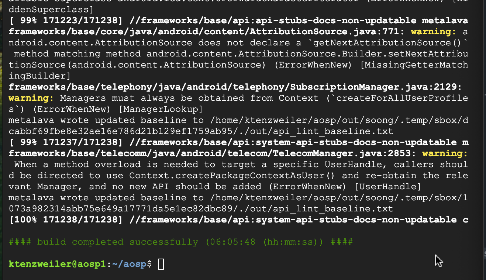

Last Updated: 2025-06-22
What should you expect?
By the end of this codelab you will know how to set up your environment for building the Android Open Source Project. You will also know how to install the required dependencies, download the codebase, and make a build. This codelab lays the foundation necessary to navigate Google Cloud's Compute Engine, install the gcloud CLI, and create a virtualization enabled Ubuntu Virtual Machine instance. These skills will prepare you for employment in the field of embedded Android.
Cost
My monthly costs for operating the Google Compute engine are about $100/month. You should expect your costs to be similar.
Time
Builds for AOSP take a long time and a powerful computer is required. A Compute Engine or a powerful workstation is necessary to handle the computational requirements. Also, the AOSP codebase has a lot of breadth and depth. There are numerous different languages and file types used in the AOSP and you will have to put forth the time and effort to learn how to use these languages and file types.
Prerequisites
- Basic Linux understanding (commands, bash scripts, code compilation, basic concepts)
- Access to a computer with a minimum of 64 GB of RAM and at least 16 cores
- Credit card to pay for your usage of a Google Cloud Compute Engine
What you'll build
In this codelab, you're going to stand up a Google Cloud Compute Engine to host your AOSP project. You will then create a build to run on an emulator. Your build will be a pure AOSP image that runs on the Cuttlefish Emulator.
What you'll learn
- How to create a VM instance using Google Cloud Compute Engine
- How to download and sync the Android Open Source Project
- How to make a build for a specific device
What you'll need
- A recent version of Chrome
- Knowledge of basic Linux commands
- A credit card to pay for your usage of Google Compute Engine
Go to the Google Cloud Console
Create a Project
Go to Google Cloud Console and click the Select a project button in the upper left side of the screen.
Then click the New project button
Name the Project
Name the project AOSP then click the Create button
Select the AOSP Project
Click the notifications button in the upper right side of the screen and click the select project button from the notification.

Download gcloud CLI
The gcloud CLI will be used to run the commands to create the disk, image, and instance needed for the VM Instance.
Confirm Python Version and XCode Command Line Tools
Verify that you have the correct version of Python installed as well as the necessary XCode Command Line Tools(if on Mac).
- Check which Python version you have installed
$ Python3 -V
Python 3.12.10
- Check if you have XCode Command Line Tools installed
$ xcode-select -p
/Library/Developer/CommandLineTools
Download the google-cloud-cli
Select the appropriate download for your machine, I have macOS 64-bit (x86_64), to your home directory.
Unzip
In your terminal, cd to the directory where you downloaded the tar/zipped file. Ideally the home directory. Then unzip the file with:
$ tar -xf google-cloud-cli-darwin-x86_64.tar.gz
Run the Install Script
From the home directory, run
$ ./google-cloud-sdk/install.sh
Select yes for all the questions asked during installation.
Initialize gcloud CLI
Initialize the gcloud CLI, then follow the instructions to authenticate:
$ ./google-cloud-sdk/bin/gcloud init
After you are authenticated, select the AOSP project you created in the beginning. Mine is option 1
You will need to create a disk, image, and VM instance next. I have specified the size and os you will need. I have also specified the necessary options required to build the AOSP. For this codelab, we are going to use the gcloud CLI. If you are more comfortable with the console UI, then use that and select the appropriate options I specify in the commands.
The Disk
You will need to create a disk that is large enough for the AOSP project, the necessary tools, and space to build the project.
Create a Disk
Create a disk named aospdisk that is 1000 Gb and uses Ubuntu 22.04 in the us-south1-a zone by running command:
$ gcloud compute disks create aospdisk --image-project ubuntu-os-cloud --image-family ubuntu-2204-lts --zone us-south1-a --size=1000
You will be prompted to enable the prerequisite API, select:
y
Ignore any warnings that show up, and notice that the disk was successfully created and named aospdisk
The Image
You will need an image that has the OS for your VM instance and nested virtualization enabled.
Create an Image
Create an image from the aospdisk you created in the previous step. Set the zone to us-south1-a, and add the nested virtualization license. Run the command:
$ gcloud compute images create aospimage --source-disk aospdisk --source-disk-zone us-south1-a --licenses "https://www.googleapis.com/compute/v1/projects/vm-options/global/licenses/enable-vmx"
The Instance
Finally, you need to create a VM instance from the aospimage you created in the previous step. Name the VM instance aosp1.
Create a VM Instance
The VM instance is the machine which will bring the disk and image together to create an environment for building the AOSP image. Run the command:
$ gcloud compute instances create aosp1 --zone us-west1-a --image aospimage
Verify
We should now see the VM Instance in the Google Cloud console.
Verify VM Instance
In your browser, in the Google Cloud console, click the navigation bar in the upper left corner to expand the menu. Then hover over the Compute Engine menu item which will expand another menu, then click the VM Instances menu item.
Verify that the aosp1 VM Instance is present and running.
There are numerous packages that need to be installed prior to downloading the AOSP and creating a build. Let's start.
Update
Let's first get familiar with the VM instance and navigate around a little bit.
SSH in to the Instance
You can SSH into the VM Instance by clicking the SSH button on the right side on the aosp1 instance.
Update the Packages
Update the packages:
$ sudo apt-get update
Check Core Count
Let's see how many cores we have on the VM Instance. Run:
$ grep -cw vmx /proc/cpuinfo
We only have 2 cores, that is not enough... Let's add some more.
Add More Cores
We need more cores to build the AOSP image, otherwise it will take a very long time to build an image.
Shut Down the VM Instance
Close the SSH-in-browser window by clicking the x button in the upper left corner of the browser. Then, go to the Google Cloud console, where your VM Instance is, and click the checkbox for the aosp1 VM Instance. Then click the STOP button to shut down the VM Instance.

Edit the VM Instance
Once the VM Instance is stopped, click the aosp1 link under the Name column.
Then click the Edit button.
Scroll down to the Machine type section, then click the Custom tab.
Change the Cores to 16, and change the Memory to 64
Then click the Save button.
Then click the Back Arrow next to the instance name aosp1 to return back to the VM Instances page.
Start the VM Instance again. Click the checkbox for the aosp1 image, and click the Start/Resume button.
\
SSH back into the VM instance by clicking the SSH button
Install Required Packages
- From the SSH-in-browser, make a directory called aosp by running the command
$ mkdir aosp
- cd into the aosp directory by running the command
$ cd aosp
- Install AOSP required packages by running:
$ sudo apt-get install git-core gnupg flex bison build-essential zip curl zlib1g-dev libc6-dev-i386 x11proto-core-dev libx11-dev lib32z1-dev libgl1-mesa-dev libxml2-utils xsltproc unzip fontconfig
- Update the packages:
$ sudo apt-get update
- Install the Repo package:
$ sudo apt-get install repo
- Verify that Repo is installed:
$ repo version
- Set your git config email property:
$ git config --global user.email "youremail"
- Set your git config name property:
$ git config --global user.name "your name"
Now we are ready to download the Android Open Source Project.
Download the AOSP
Now that the required tools and packages are installed, we are ready to download the AOSP project.
- Initialize the repository by running from the aosp directory:
$ repo init -b android-latest-release -u https://android.googlesource.com/platform/manifest
- Then sync the repo(this will take about 30 minutes):
$ repo sync
Success!
Now that we have synced the repo, we can create a build!
- Run this from the aosp directory to load the environment variables into the terminals session:
$ source build/envsetup.sh
- Then specify which release to build:
$ lunch aosp_cf_x86_64_only_phone-aosp_current-userdebug
- Finally, start a build:
$ m
It took about 6 hours to finish. The results of the build are in the out directory.
Congratulations, you've successfully built your first AOSP image!
You created a VM Instance to host your build environment, and you installed all the required packages to download the project and create builds.
You now know the key steps required to create your own AOSP build environment.
What's next?
Check out some of these codelabs...
- Running the build on a Cuttlefish Emulator